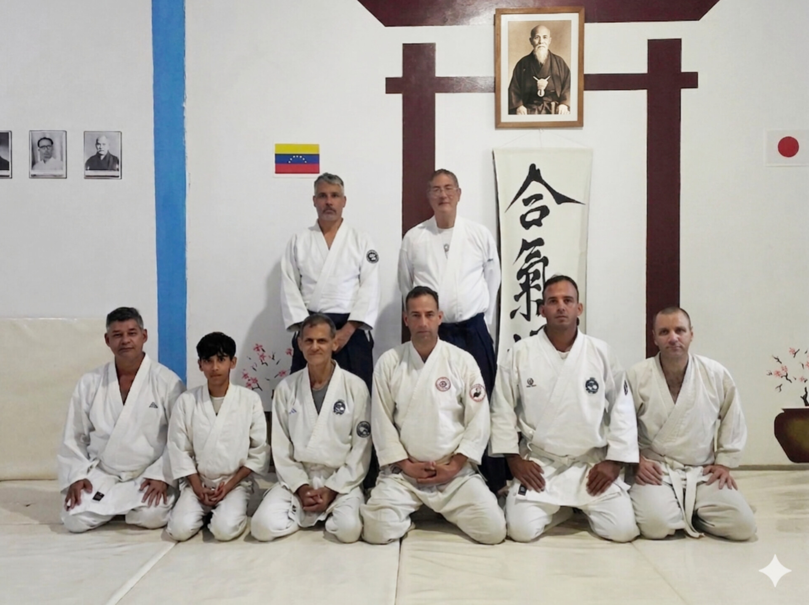

Un arte marcial basado en la no-resistencia y el desarrollo del espíritu en la Isla de Margarita.
Descubre MásEn **Aikido Dojo Nueva Esparta**, brindamos un espacio dedicado a la práctica del Aikido tradicional, fundado bajo los principios de Morihei Ueshiba. Aquí no buscamos la derrota del adversario, sino la victoria sobre uno mismo y la resolución pacífica de conflictos.
Ubicados en el estado Nueva Esparta, contamos con instructores certificados comprometidos con la enseñanza de este arte, brindando un ambiente de respeto, disciplina y camaradería para todas las edades.

Armonía, unión o integración. El principio de mezclarse con la energía del oponente en lugar de chocar contra ella.
Energía vital o espíritu universal. La fuerza que fluye a través de todos los seres y que aprendemos a dirigir con calma.
El camino o sendero. La práctica del Aikido entendida como una vía de perfeccionamiento humano, físico y moral.
Pon a prueba tus conocimientos. Haz clic en la tarjeta para ver la respuesta.
¿Quién es el fundador del Aikido?
Morihei Ueshiba, también conocido como O-Sensei.
Principiantes
18:00 - 19:30
Enfoque en caídas (Ukemi) y posturas básicas.
Avanzados
19:00 - 20:30
Técnicas con armas (Bukiwaza) y Jidori.
Práctica Libre
18:30 - 20:00
Práctica supervisada para todos los niveles.
Aikido Infantil
10:00 - 11:30
Formación de carácter y disciplina lúdica.